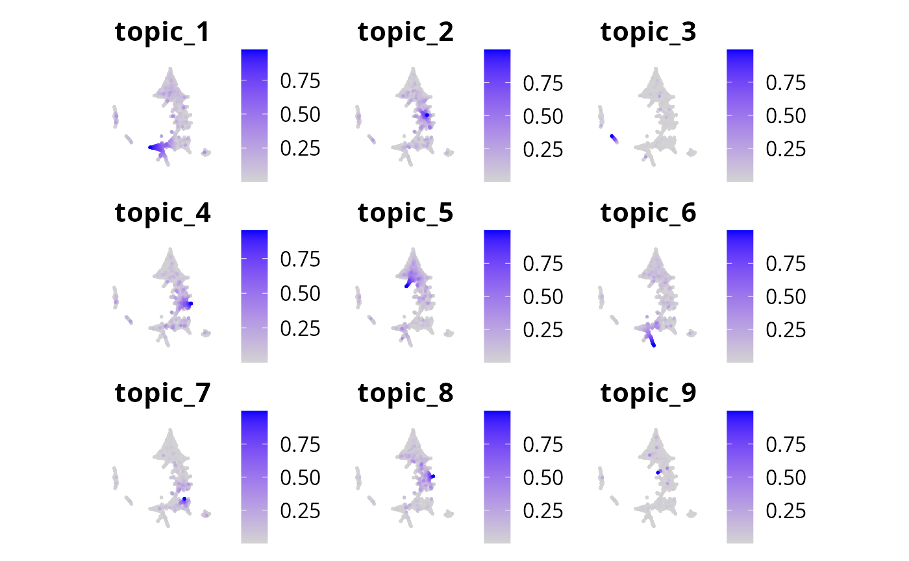
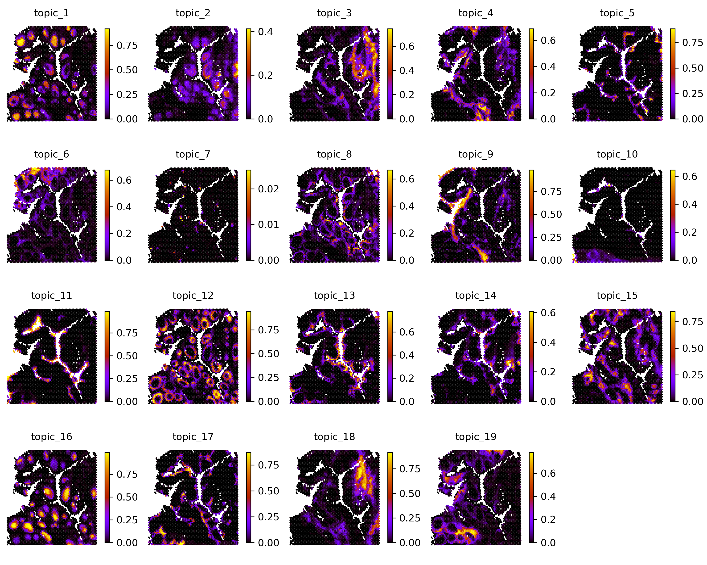
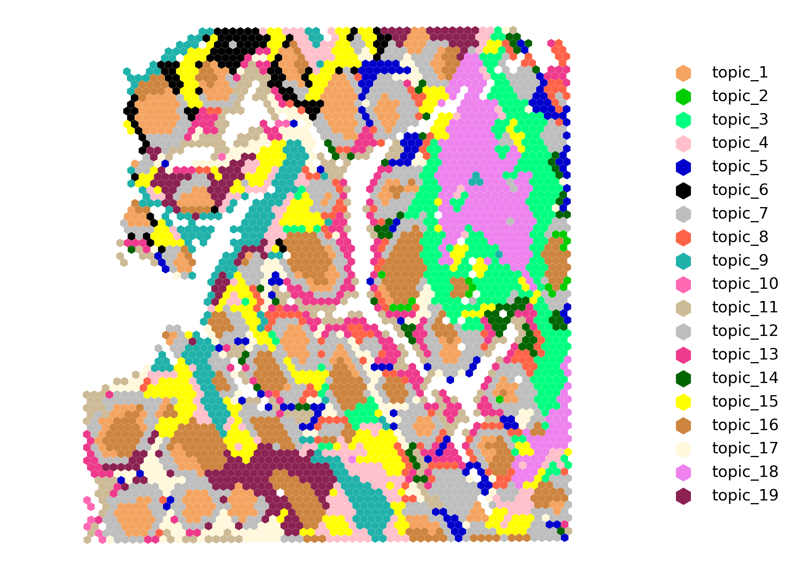

Tutorial 3: Human PBMCs (ATAC + RNA + Protein Epitopes)
Source:vignettes/tutorial-3-human-pbmcs.Rmd
tutorial-3-human-pbmcs.RmdWelcome to this tutorial on using the mTopic package for
non-spatial multimodal topic modeling of human peripheral blood
mononuclear cells (PBMCs), using the DOGMA-seq
dataset.
In this tutorial, we will cover the following steps:
- Scaling and normalizing the data.
- Applying non-spatial multimodal topic model to identify distinct cell populations and explore their functional roles.
- Visualizing the results to gain insights into the composition and structure of the immune cell landscape.
Let’s begin by importing the required libraries and setting up the working directory for this analysis. The dataset is available at Zenodo.
library(mTopic)
library(Seurat)
dataset_name <- "Human_PBMC_ATAC_RNA_Protein_filtered.rds"
working_dir <- '~/projects/datasets/'
if(!file.exists(paste0(working_dir, dataset_name))){
download.file(
url = paste0("https://zenodo.org/records/15431784/files/", dataset_name, "?download=1"),
destfile = paste0(working_dir, dataset_name),
mode = "wb"
)
}Non-Spatial Multimodal Topic Modeling
The filtered dataset contains 7,349 cells and includes three modalities:
-
atac: chromatin accessibility data (Assay for Transposase-Accessible Chromatin), -
rna: gene expression data, -
prot: protein abundance data.
This rich multimodal structure enables integrated modeling of transcriptional activity, regulatory accessibility, and surface protein expression at single-cell resolution.
pbmc <- readRDS(paste0(working_dir, dataset_name))
pbmc
#> An object of class Seurat
#> 147123 features across 7349 samples within 3 assays
#> Active assay: atac (136915 features, 0 variable features)
#> 1 layer present: counts
#> 2 other assays present: rna, protTo prepare the dataset for topic modeling (as in Tutorial 2), we need to transform and scale the raw counts across all modalities:
- TF-IDF transformation (
tfidf) foratacandrna. Emphasizes informative, modality-specific features by balancing frequency and importance. - CLR normalization (
clr) forprot. Corrects compositional bias in protein counts across cells.
After normalization, apply scale_counts to scale total
counts across modalities, ensuring balanced contribution to the topic
model.
pbmc <- tfidf(pbmc, mod = 'atac')
pbmc <- tfidf(pbmc, mod = 'rna')
pbmc <- clr(pbmc, mod = 'prot')
pbmc <- scale_counts(pbmc)To train a non-spatial topic model using MTM, define the
model, run Variational Inference (VI) for 500 iterations,
and export the trained parameters to the pbmc object.
While we use 100 iterations in this tutorial for thorough training, the model often converges to meaningful topics in as few as 20 iterations. You can adjust the number of iterations based on dataset size and desired precision.
pbmc <- export_params(mtm_model, pbmc)
pbmc
#> An object of class Seurat
#> 147123 features across 7349 samples within 3 assays
#> Active assay: atac (136915 features, 0 variable features)
#> 3 layers present: counts, data, scale.data
#> 2 other assays present: rna, prot
#> 1 dimensional reduction calculated: mTopicVisualizing Results
To visualize the MTM results, compute a 2-dimensional UMAP embedding
based on the topic proportions using the umap function.
This projects cells into a low-dimensional space that preserves
topic-driven structure. By default the embedding is saved as
mTopic_umap reduction.
pbmc <- umap(pbmc, n_components = 2, min_dist = 0.1, n_neighbors = 20)
#> Warning: No assay specified, setting assay as RNA by default.
pbmc
#> An object of class Seurat
#> 147123 features across 7349 samples within 3 assays
#> Active assay: atac (136915 features, 0 variable features)
#> 3 layers present: counts, data, scale.data
#> 2 other assays present: rna, prot
#> 2 dimensional reductions calculated: mTopic, mTopic_umapThe umap function is designed to create an embedding
based on the topic proportions only, rather than, for example, PCA. This
can also be achieved using a standard approach from the Seurat
package.
pbmc <- Seurat::RunUMAP(pbmc, reduction = 'mTopic', dims = 1:30)Now you can explore the topic-cell distributions by visualizing
individual topic proportions or dominant topics using functions like
plot_topics and plot_dominant_topics.
plot_topics(pbmc, x = 'mTopic_umap')
Topic distributions can also be visualized with the Seurat
FeaturePlot() function:
Seurat::FeaturePlot(pbmc, order = TRUE, pt.size = 0.1, features = paste0("topic_", 1:9)) * Seurat::NoAxes() * ggplot2::coord_equal()
palette <- list(
'topic_1' = '#CDBA96', 'topic_2' = '#000080', 'topic_3' = '#FFFF00',
'topic_4' = '#9ECAE1', 'topic_5' = '#189E7F', 'topic_6' = '#FFF8DC',
'topic_7' = '#642915', 'topic_8' = '#0000FF', 'topic_9' = '#BEBEBE',
'topic_10' = '#4292C6', 'topic_11' = '#CD0000', 'topic_12' = '#58508D',
'topic_13' = '#006400', 'topic_14' = '#10D894', 'topic_15' = '#666666',
'topic_16' = '#800080', 'topic_17' = '#FF00FF', 'topic_18' = '#FFC0CB',
'topic_19' = '#BEBEBE', 'topic_20' = '#FFD700', 'topic_21' = '#BEBEBE',
'topic_22' = '#00FFFF', 'topic_23' = '#CD853F', 'topic_24' = '#DDA0DD',
'topic_25' = '#000000', 'topic_26' = '#551A8B', 'topic_27' = '#00CD00',
'topic_28' = '#F4A460', 'topic_29' = '#00FF7F', 'topic_30' = '#FFBBFF'
)
plot_dominant_topics(pbmc, x = 'mTopic_umap', palette = palette)
To further interpret the results of the MTM, you can plot feature signatures for each modality. Feature signatures represent the importance or contribution of specific features — genes, chromatin accessibility regions, or proteins—to each topic.
Use plot_signatures to visualize the top features per
topic for any selected modality, helping to identify key markers that
define each topic’s biological identity.
plot_signatures(pbmc, mod='atac', n_top = 10)
plot_signatures(pbmc, mod = 'rna', n_top = 20)
plot_signatures(pbmc, mod = 'prot', n_top = 10, figsize = c(10, 8))
To conclude the tutorial, save the pbmc object with the
trained parameters to a file. This ensures the results can be reloaded
later for further analysis or visualization.